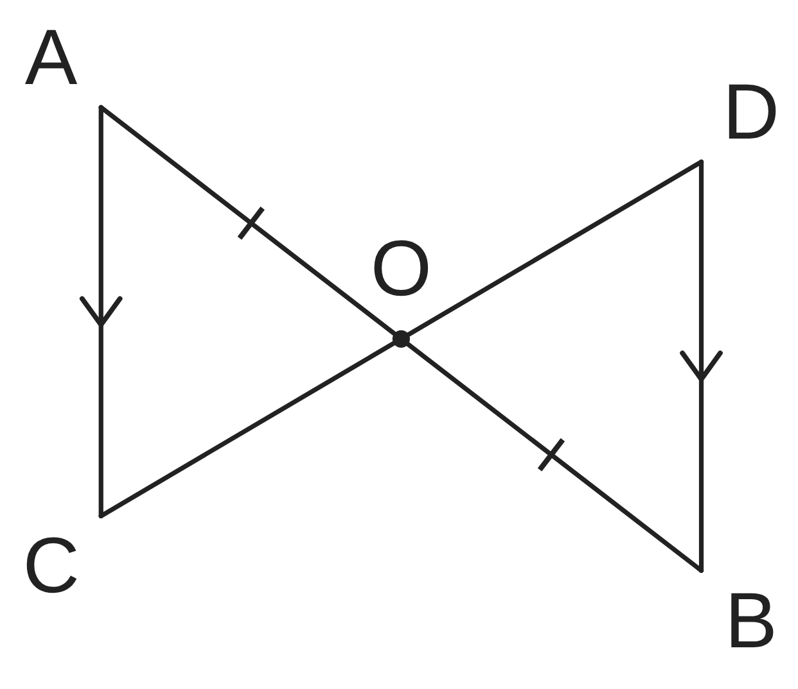
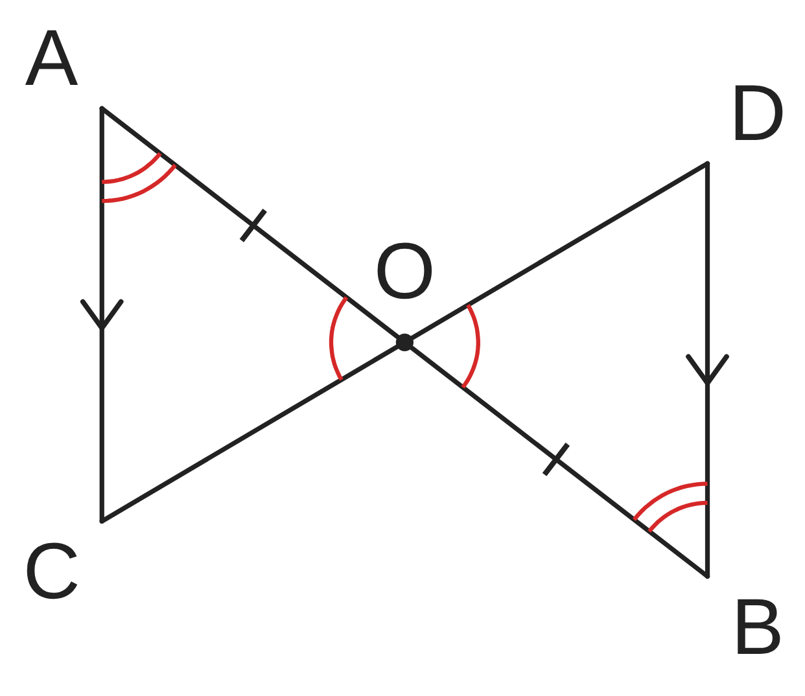
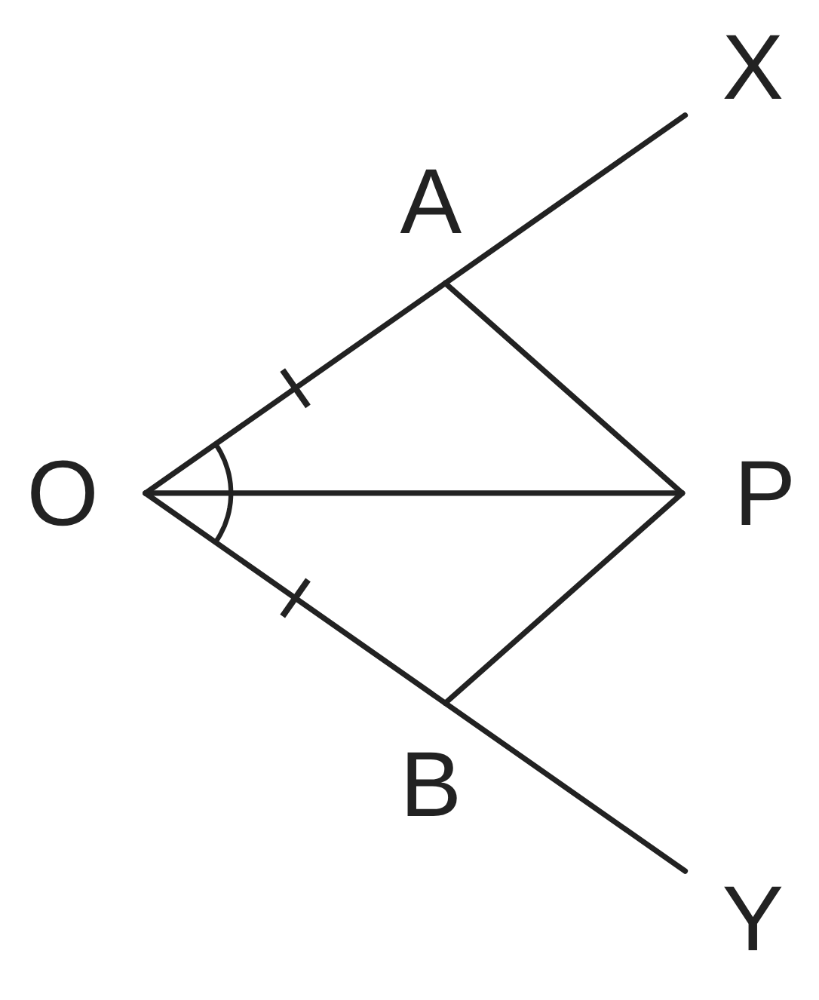
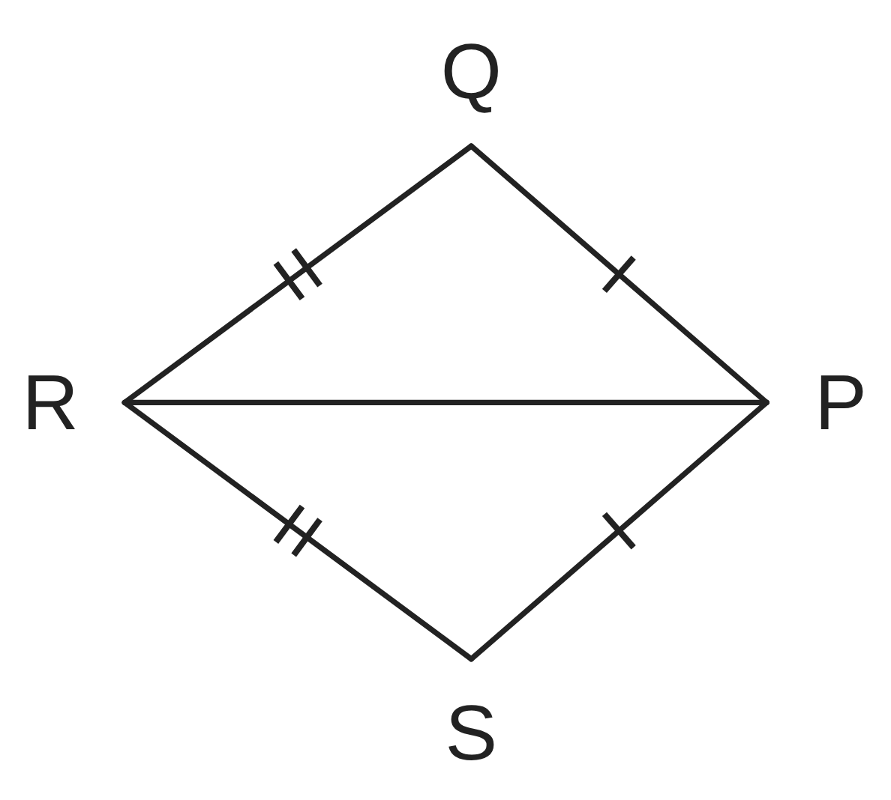

ペア学習
第12時 証明のしくみを読み取ろう
前の時間の重要語句を、ペアで出し合おう
第11時の重要語句から、1人1問ずつ、言葉を選んで出題する。
聞かれた人は、その言葉の意味を、自分の言葉で言う。
仮定
結論
根拠
証明
平行と合同 第12時 証明のしくみを読み取ろう
めあて
第12時 証明のしくみを読み取ろう
証明のしくみを読み取ろう
学習課題
右の図で、線分 AB と CD が点 O で交わり、
AC∥DB、AO＝BO ならば、CO＝DO である。
この証明の ①〜⑤ は、
それぞれ何を根拠にしているだろう。
△AOC と △BOD において
① AO＝BO
② ∠AOC＝∠BOD
③ ∠OAC＝∠OBD
④ △AOC≡△BOD
⑤ CO＝DO

平行と合同 第12時 証明のしくみを読み取ろう
学習課題のまとめ
第12時 証明のしくみを読み取ろう
この証明の ①〜⑤ は、それぞれ何を根拠にしているだろう。
△AOC と △BOD において
①
AO＝BO
仮定
②
∠AOC＝∠BOD
対頂角は等しい
③
∠OAC＝∠OBD
平行線の錯角は等しい（AC∥DB）
④
△AOC≡△BOD
合同条件（1組の辺とその両端の角）
⑤
CO＝DO
合同な図形の、対応する辺は等しい

平行と合同 第12時 証明のしくみを読み取ろう
ことば
第12時 証明のしくみを読み取ろう
証明では、次のことがらを根拠にする。
・ （問題で、はじめにわかっていること）
・対頂角は等しい。平行線の ・ は等しい。
・三角形の （3つ）
・合同な図形の、 する辺や角は等しい。
平行と合同 第12時 証明のしくみを読み取ろう
ことば
第12時 証明のしくみを読み取ろう
証明では、次のことがらを根拠にする。
・仮定（問題で、はじめにわかっていること）
・対頂角は等しい。平行線の同位角・錯角は等しい。
・三角形の合同条件（3つ）
・合同な図形の、対応する辺や角は等しい。
平行と合同 第12時 証明のしくみを読み取ろう
例題
第12時 証明のしくみを読み取ろう
右の図で、OP は ∠XOY の二等分線で、
半直線 OX、OY 上に OA＝ となる点 A、B をとる。
PA＝PB であることの証明を、空欄をうめて完成させよう。
△OAP と △OBP において
仮定より OA＝ …①
OP は ∠XOY の二等分線だから
∠AOP＝∠ …②
OP は …③
①、②、③ より、 が、
それぞれ等しいから △OAP≡△OBP
合同な図形の、対応する は等しいから PA＝PB

平行と合同 第12時 証明のしくみを読み取ろう
例題 解答
第12時 証明のしくみを読み取ろう
OP は ∠XOY の二等分線、OA＝OB。PA＝PB を証明しよう。
△OAP と △OBP において
仮定より OA＝OB …①
OP は ∠XOY の二等分線だから
∠AOP＝∠BOP …②
OP は共通 …③
①、②、③ より、2組の辺とその間の角が、
それぞれ等しいから △OAP≡△OBP
合同な図形の、対応する辺は等しいから PA＝PB

平行と合同 第12時 証明のしくみを読み取ろう
考えよう
第12時 証明のしくみを読み取ろう
ア〜カは、右の図の「PQ＝PS、RQ＝RS ならば、
∠PQR＝∠PSR」の証明を、ばらばらにしたものである。
正しい順にならべよう。入れかえてよい行と、
入れかえてはいけない行は、どれだろう。
ア
3組の辺が、それぞれ等しいから △PQR≡△PSR
イ
仮定より RQ＝RS
ウ
△PQR と △PSR において
エ
合同な図形の、対応する角は等しいから
∠PQR＝∠PSR
オ
PR は共通
カ
仮定より PQ＝PS
発展
演習まで解き終わった人は、考えてみよう！
「PR は共通」の行を消すと、この証明は、どうなるだろう。

①
正しい順に、記号をならべよう。
②
入れかえてよい行と、
入れかえてはいけない行を、
わけといっしょに書こう。
③
友達と話して、証明が、
どのようにつながっているかを、
自分のことばでまとめよう。
平行と合同 第12時 証明のしくみを読み取ろう
振り返り
第12時 証明のしくみを読み取ろう
今日のめあて
証明のしくみを読み取ろう
仮定
根拠
証明
合同条件
今日わかったことを、ペアで1つずつ言い合おう。
ワークシートと演習プリントを出そう。（未完成でも出す）
平行と合同 第12時 証明のしくみを読み取ろう